Chapter 1 Introduction
library(readr)
library(tibble)
library(dplyr)
library(purrr)
library(ggplot2)
library(ggridges)
library(lubridate)
library(randomForest)
library(rpart)
library(rpart.plot)
library(cluster)
library(caret)
library(factoextra)
library(rsample)
library(janitor)
library(rvest)
library(dendextend)
library(knitr)
library(kableExtra)
library(ggthemes)- TODO: Show package messaging? check conflicts!
- TODO: Should this be split into three analyses with different packages?
1.1 Regression: Powerlifting
1.1.1 Background
1.1.2 Data
- TODO: Why readr::col_factor() and not just col_factor()?
TODO: Characters should be character and “categories” should be factors.
TODO: Is
na.omit()actually a good idea?
## # A tibble: 3,604 x 8
## Name Sex Bodyweight Age Squat Bench Deadlift Total
## <chr> <fct> <dbl> <dbl> <dbl> <dbl> <dbl> <dbl>
## 1 Ariel Stier F 60 32 128. 72.5 150 350
## 2 Nicole Bueno F 60 26 110 60 135 305
## 3 Lisa Peterson F 67.5 28 118. 67.5 138. 322.
## 4 Shelby Bandula F 67.5 26 92.5 67.5 140 300
## 5 Lisa Lindhorst F 67.5 28 92.5 62.5 132. 288.
## 6 Laura Burnett F 67.5 30 90 45 108. 242.
## 7 Suzette Bradley F 75 38 125 75 158. 358.
## 8 Norma Romero F 75 20 92.5 42.5 125 260
## 9 Georgia Andrews F 82.5 29 108. 52.5 120 280
## 10 Christal Bundang F 90 30 100 55 125 280
## # … with 3,594 more rows1.1.3 EDA
set.seed(1)
# test-train split
pl_tst_trn_split = initial_split(pl, prop = 0.80)
pl_trn = training(pl_tst_trn_split)
pl_tst = testing(pl_tst_trn_split)
# estimation-validation split
pl_est_val_split = initial_split(pl_trn, prop = 0.80)
pl_est = training(pl_est_val_split)
pl_val = testing(pl_est_val_split)- TODO: Train can be used however you want. (Including EDA.)
- TODO: Test can only be used after all model decisions have been made!

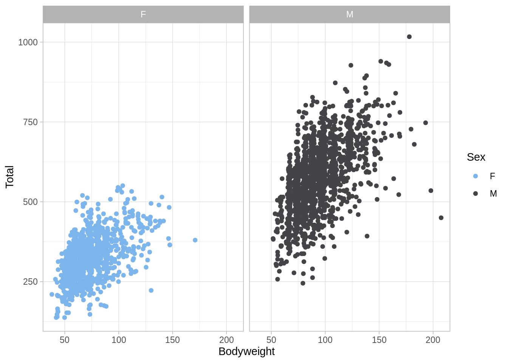
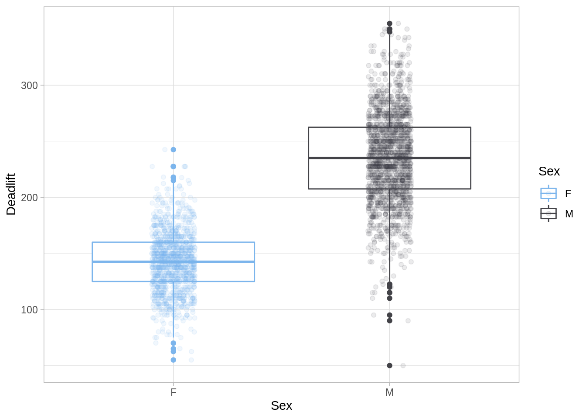
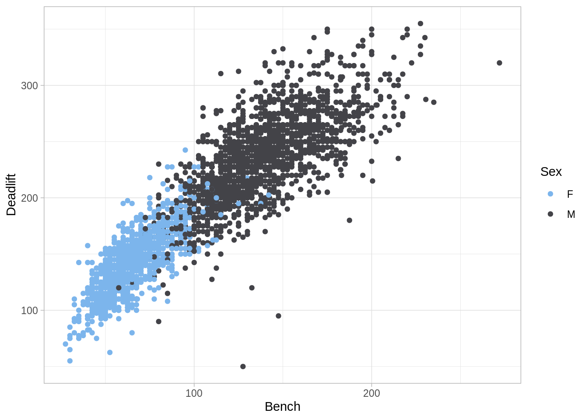
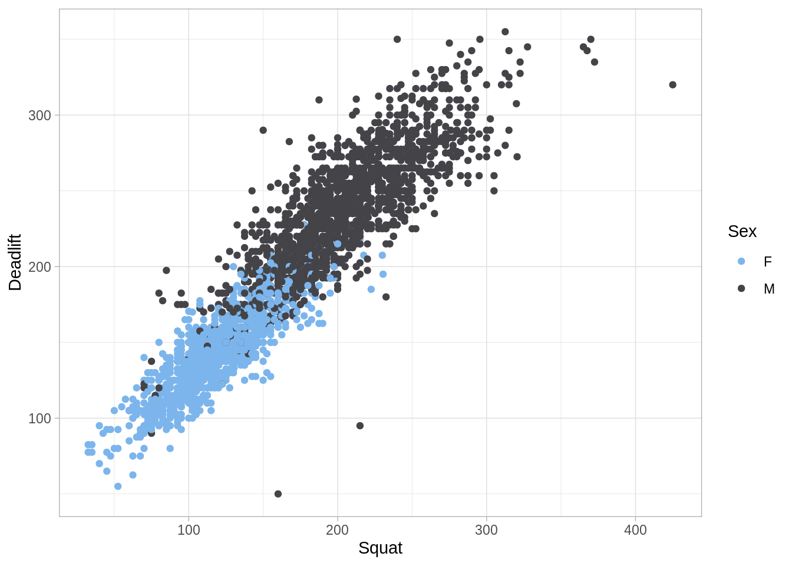
- TODO: https://www.tidyverse.org/
- TODO: https://en.wikipedia.org/wiki/Tidy_data
- TODO: http://vita.had.co.nz/papers/tidy-data.pdf
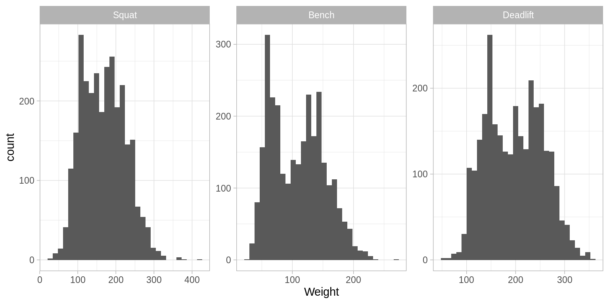


1.1.4 Modeling
dl_mod_form = formula(Deadlift ~ Sex + Bodyweight + Age + Squat + Bench)
set.seed(1)
lm_mod = lm(dl_mod_form, data = pl_est)
knn_mod = caret::knnreg(dl_mod_form, data = pl_est)
rf_mod = randomForest(dl_mod_form, data = pl_est)
rp_mod = rpart(dl_mod_form, data = pl_est)- TODO: Note: we are not using
Name. Why? We are not usingTotal. Why? - TODO: look what happens with
Total! You’ll see it withlm(), you’ll be optimistic withrandomForest(). - TODO: What variables are allowed? (With respect to real world problem.)
- TODO: What variables lead to the best predictions?
1.1.5 Model Evaluation
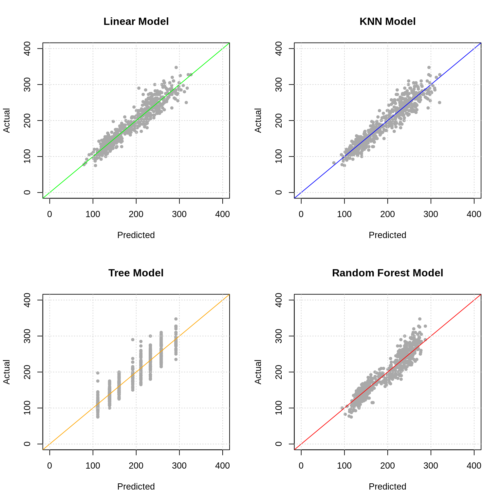
c(calc_rmse(actual = pl_val$Deadlift, predicted = predict(lm_mod, pl_val)),
calc_rmse(actual = pl_val$Deadlift, predicted = predict(knn_mod, pl_val)),
calc_rmse(actual = pl_val$Deadlift, predicted = predict(rp_mod, pl_val)),
calc_rmse(actual = pl_val$Deadlift, predicted = predict(rf_mod, pl_val)))## [1] 18.26654 19.19625 21.68142 19.23643reg_preds = map(list(lm_mod, knn_mod, rp_mod, rf_mod), predict, pl_val)
map_dbl(reg_preds, calc_rmse, actual = pl_val$Deadlift)## [1] 18.26654 19.19625 21.68142 19.23643- TODO: Never supply
data = dftopredict(). You have been warned.

- TODO: Use knitr::include_graphics()
## [1] 14.38953 14.99748 17.14823 15.28626reg_results = tibble(
Model = c("Linear", "KNN", "Tree", "Forest"),
RMSE = map_dbl(reg_preds, calc_rmse, actual = pl_val$Deadlift),
MAE = map_dbl(reg_preds, calc_mae, actual = pl_val$Deadlift)) | Model | RMSE | MAE |
|---|---|---|
| Linear | 18.26654 | 14.38953 |
| KNN | 19.19625 | 14.99748 |
| Tree | 21.68142 | 17.14823 |
| Forest | 19.23643 | 15.28626 |
1.1.6 Discussion

## [1] 22.29668- TODO: Is this a good model?
- TODO: Is this model useful?
william_biscarri = tibble(
Name = "William Biscarri",
Age = 28,
Sex = "M",
Bodyweight = 83,
Squat = 130,
Bench = 90
)## 1
## 175.4951.2 Classification: Handwritten Digits
1.2.1 Background
1.2.2 Data
- TODO: How is this data pre-processed?
- TODO: https://gist.github.com/daviddalpiaz/ae62ae5ccd0bada4b9acd6dbc9008706
- TODO: https://github.com/itsrainingdata/mnistR
- TODO: https://pjreddie.com/projects/mnist-in-csv/
- TODO: http://varianceexplained.org/r/digit-eda/
mnist_trn = read_csv(file = "data/mnist_train_subest.csv")
mnist_tst = read_csv(file = "data/mnist_test.csv")mnist_trn_y = as.factor(mnist_trn$X1)
mnist_tst_y = as.factor(mnist_tst$X1)
mnist_trn_x = mnist_trn[, -1]
mnist_tst_x = mnist_tst[, -1]- TODO: If we were going to tune a model, we would need a validation split as well. We’re going to be lazy and just fit a single random forest.
- TODO: This is an agreed upon split.
1.2.3 EDA
pixel_positions = expand.grid(j = sprintf("%02.0f", 1:28),
i = sprintf("%02.0f", 1:28))
pixel_names = paste("pixel", pixel_positions$i, pixel_positions$j, sep = "-")show_digit = function(arr784, col = gray(12:1 / 12), ...) {
image(matrix(as.matrix(arr784), nrow = 28)[, 28:1],
col = col, xaxt = "n", yaxt = "n", ...)
grid(nx = 28, ny = 28)
}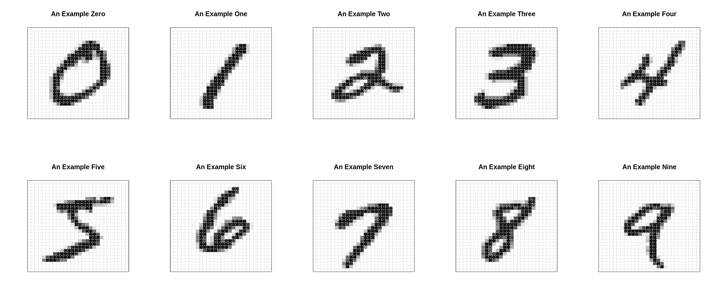
1.2.5 Model Evaluation
## [1] 0.8839## actual
## predicted 0 1 2 3 4 5 6 7 8 9
## 0 959 0 14 6 1 15 22 1 10 10
## 1 0 1112 5 5 1 16 5 9 5 6
## 2 1 2 928 31 3 5 19 24 17 8
## 3 0 2 11 820 1 24 0 1 13 13
## 4 4 0 13 1 839 21 39 11 18 40
## 5 3 1 1 88 3 720 18 1 25 9
## 6 7 2 15 3 25 15 848 0 18 2
## 7 2 1 29 24 1 14 2 928 15 30
## 8 4 14 13 22 5 19 5 4 797 3
## 9 0 1 3 10 103 43 0 49 56 8881.2.6 Discussion

## 0 1 2 3 4 5 6 7 8 9
## 0.09 0.03 0.25 0.14 0.02 0.14 0.25 0.01 0.05 0.02## [1] 2
## Levels: 0 1 2 3 4 5 6 7 8 9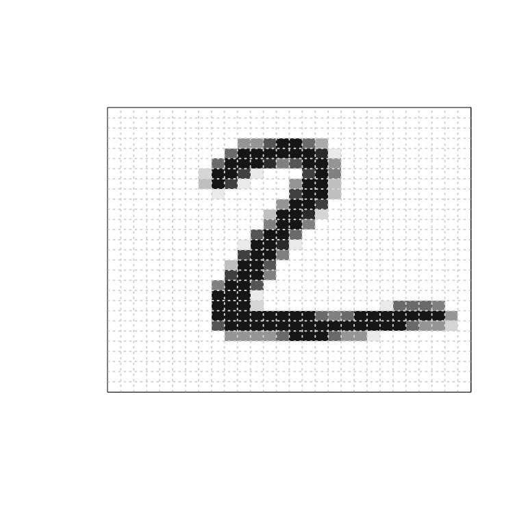
1.3 Clustering: NBA Players
1.3.1 Background
1.3.2 Data
- https://www.basketball-reference.com/leagues/NBA_2019_totals.html
- https://www.basketball-reference.com/leagues/NBA_2019_per_minute.html
- https://www.basketball-reference.com/leagues/NBA_2019_per_poss.html
- https://www.basketball-reference.com/leagues/NBA_2019_advanced.html
nba = scrape_nba_season_player_stats()
nba$pos = factor(nba$pos, levels = c("PG", "SG", "SF", "PF", "C"))## # A tibble: 100 x 93
## player_team pos age tm g gs mp fg fga fg_percent
## <chr> <fct> <dbl> <chr> <dbl> <dbl> <dbl> <dbl> <dbl> <dbl>
## 1 Álex Abrin… SG 25 OKC 31 2 588 56 157 0.357
## 2 Quincy Acy… PF 28 PHO 10 0 123 4 18 0.222
## 3 Jaylen Ada… PG 22 ATL 34 1 428 38 110 0.345
## 4 Steven Ada… C 25 OKC 80 80 2669 481 809 0.595
## 5 Bam Adebay… C 21 MIA 82 28 1913 280 486 0.576
## 6 Deng Adel … SF 21 CLE 19 3 194 11 36 0.306
## 7 DeVaughn A… SG 25 DEN 7 0 22 3 10 0.3
## 8 LaMarcus A… C 33 SAS 81 81 2687 684 1319 0.519
## 9 Rawle Alki… SG 21 CHI 10 1 120 13 39 0.333
## 10 Grayson Al… SG 23 UTA 38 2 416 67 178 0.376
## # … with 90 more rows, and 83 more variables: x3p <dbl>, x3pa <dbl>,
## # x3p_percent <dbl>, x2p <dbl>, x2pa <dbl>, x2p_percent <dbl>,
## # e_fg_percent <dbl>, ft <dbl>, fta <dbl>, ft_percent <dbl>, orb <dbl>,
## # drb <dbl>, trb <dbl>, ast <dbl>, stl <dbl>, blk <dbl>, tov <dbl>,
## # pf <dbl>, pts <dbl>, fg_pm <dbl>, fga_pm <dbl>, fg_percent_pm <dbl>,
## # x3p_pm <dbl>, x3pa_pm <dbl>, x3p_percent_pm <dbl>, x2p_pm <dbl>,
## # x2pa_pm <dbl>, x2p_percent_pm <dbl>, ft_pm <dbl>, fta_pm <dbl>,
## # ft_percent_pm <dbl>, orb_pm <dbl>, drb_pm <dbl>, trb_pm <dbl>,
## # ast_pm <dbl>, stl_pm <dbl>, blk_pm <dbl>, tov_pm <dbl>, pf_pm <dbl>,
## # pts_pm <dbl>, fg_pp <dbl>, fga_pp <dbl>, fg_percent_pp <dbl>,
## # x3p_pp <dbl>, x3pa_pp <dbl>, x3p_percent_pp <dbl>, x2p_pp <dbl>,
## # x2pa_pp <dbl>, x2p_percent_pp <dbl>, ft_pp <dbl>, fta_pp <dbl>,
## # ft_percent_pp <dbl>, orb_pp <dbl>, drb_pp <dbl>, trb_pp <dbl>,
## # ast_pp <dbl>, stl_pp <dbl>, blk_pp <dbl>, tov_pp <dbl>, pf_pp <dbl>,
## # pts_pp <dbl>, o_rtg_pp <dbl>, d_rtg_pp <dbl>, per <dbl>,
## # ts_percent <dbl>, x3p_ar <dbl>, f_tr <dbl>, orb_percent <dbl>,
## # drb_percent <dbl>, trb_percent <dbl>, ast_percent <dbl>,
## # stl_percent <dbl>, blk_percent <dbl>, tov_percent <dbl>,
## # usg_percent <dbl>, ows <dbl>, dws <dbl>, ws <dbl>, ws_48 <dbl>,
## # obpm <dbl>, dbpm <dbl>, bpm <dbl>, vorp <dbl>1.3.3 EDA
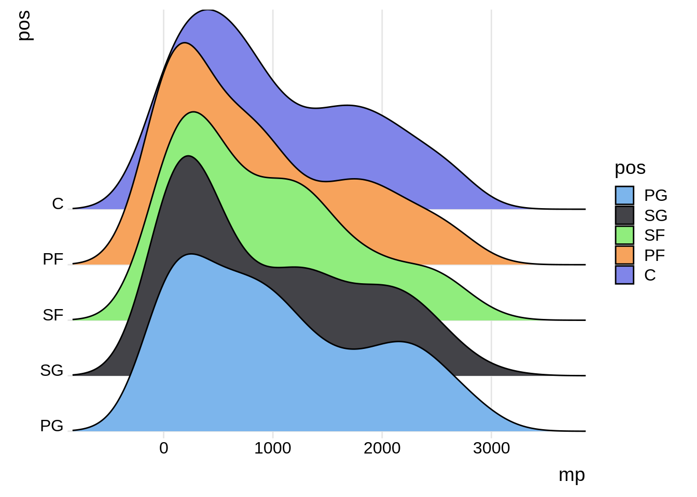

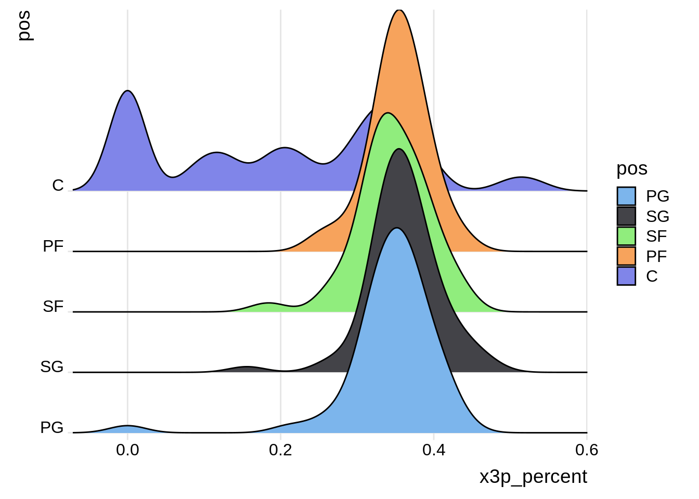
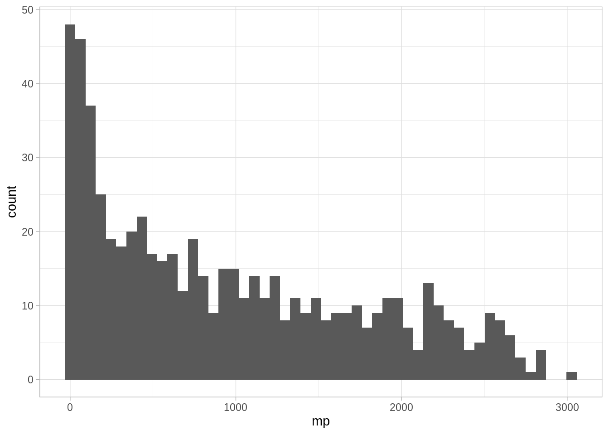
1.3.4 Modeling
set.seed(42)
# function to compute total within-cluster sum of square
wss = function(k, data) {
kmeans(x = data, centers = k, nstart = 10)$tot.withinss
}
# Compute and plot wss for k = 1 to k = 15
k_values = 1:15
# extract wss for 2-15 clusters
wss_values = map_dbl(k_values, wss, data = nba_for_clustering)
plot(k_values, wss_values,
type="b", pch = 19, frame = TRUE,
xlab="Number of clusters K",
ylab="Total within-clusters sum of squares")
grid()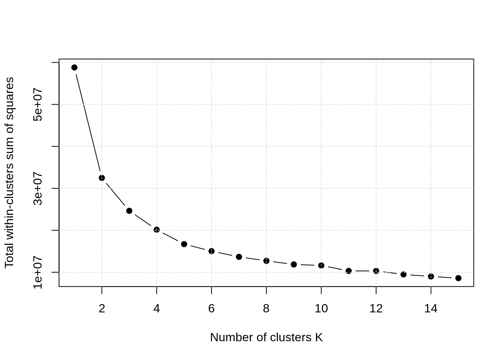
- TODO: K-Means likes clusters of roughly equal size.
- TODO: http://varianceexplained.org/r/kmeans-free-lunch/
## nba_hc_clust
## 1 2 3 4 5
## 38 13 28 11 11.3.5 Model Evaluation

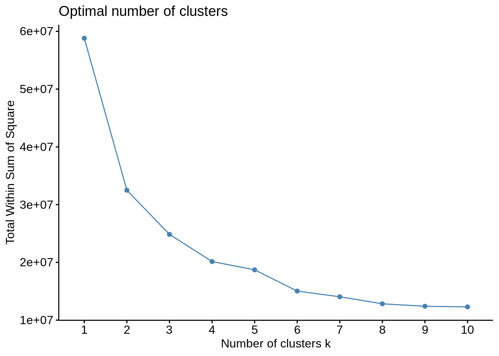

1.3.6 Discussion
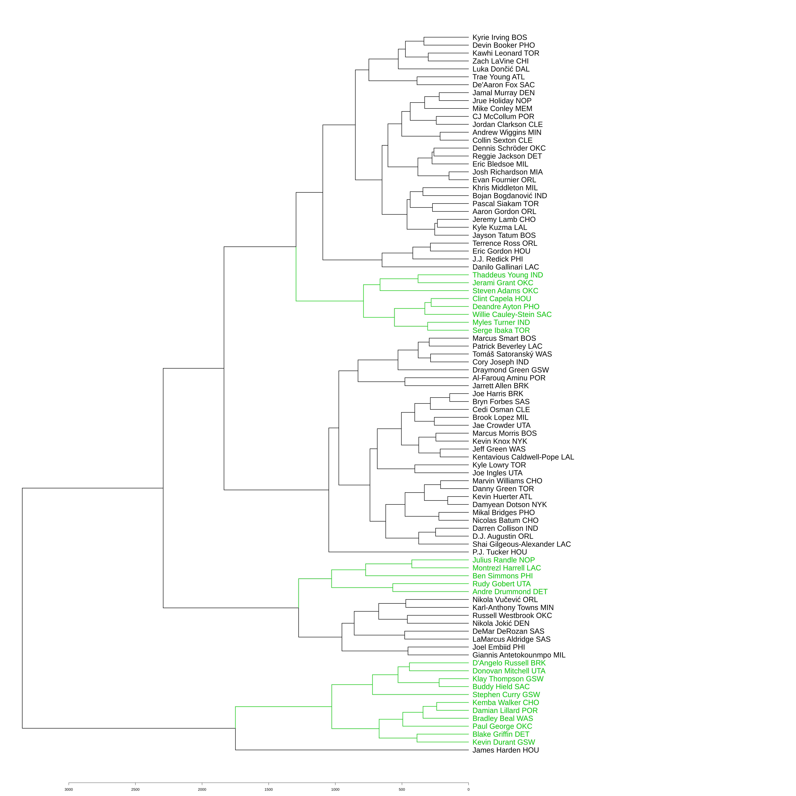